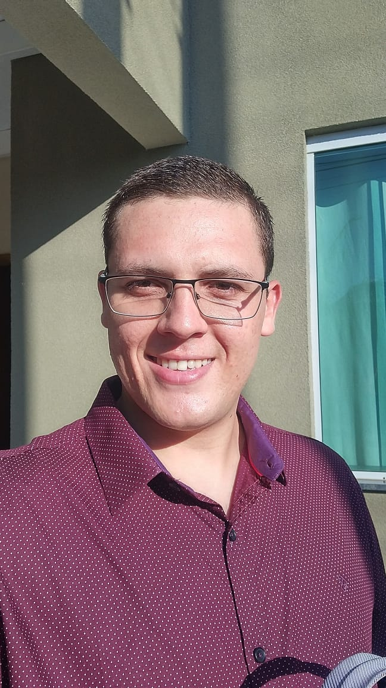

SOBRE MIM
Futuro desenvolvedor FullStack, em processo de aprendizagem.
Apaixonado por tecnologia, sempre tive o desejo de trabalhar na área de desenvolvimento de sistemas, automação, inteligência artificial.
Gosto de solucionar problemas e desenvolver melhoria contínua em processos, procurando novas formas de fazer algo reduzindo tempo e custos.
Atualmente trabalho com mecânica de máquinas pesadas na Caterpillar
Sou musicista exercendo a função voluntária na igreja como instrutor musical.
Amo estar com minha esposa e em breve seremos pais.